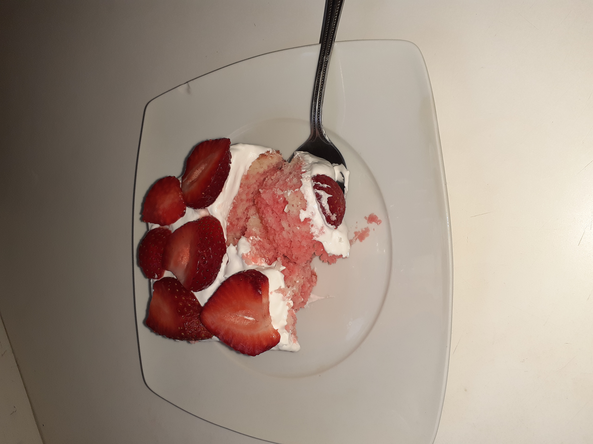

Jello Cake

Summer just isn't summer without this cake.
I remember trying this cake for the first time in middle school and I absolutely loved it. Iv'e been hooked ever since and I have actually chosen to make this cake for my birthday several times. The Jello gives such a beatiful color and the whipped cream gives a light and fluffy texture. You can easily customize this cake by choosing a different flavor of Jello and adding different fruits like mandarin oranges or even kiwi.
Ingredients
Cake
- 1 Box of Super-moist White Cake Mix
- 3 Eggs
- 1/4 cup Vegetable Oil
- 1/2 cup of Water
Jello
- 1 Pack of Strawberry Jello
- 1 cup of boiling Water
- 1 cup of cold Water
Toppings
- 1/2 cup of Sliced Strawberries
- 1 cup of Cool Whip
Steps
- Bake cake according to box directions in a 9x13 pan. Then allow to cool for 15 minutes.
- While cake is cooling, boil water in a medium sauce pan over medium heat on stove top.
- Add jello packet to boiling water and stir until jello is completely dissolved, then stir in cold water.
- Using a fork, poke holes into cake.
- Pour jello evenly over the top of cake.
- Refridgerate cake for 3 hours.
- Using a spoon, spread a generous amount of cool whip over the cake.
- Top with the sliced strawberries and enjoy!